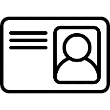

STEININGER GERMÁN
Habilidades
- Adaptabilidad
- Pensamiento crítico
- Creativo
- Detallista
- Dedicado
- Responsable
INFORMACIÓN PERSONAL
06.11.2004

20 46101238 9
steiningergerman@gmail.com
+54 11 6488 1353
Ituzaingó - Buenos Aires
linkedin.com/in/german-steininger/
github.com/Steiningerr
EDUCACIÓN
Secundario
- Bachiller en comunicación (Egresado 2022)
Instituto San Francisco Solano
Terciario
- Animación Digital y Efectos Visuales (Incompleto - 2023)
Universidad Abierta Interamericana (UAI)
- Manejo básico de herramientas de Adobe, como After Effects, Photoshop e Illustrator.
Universitario
- Tecnicatura Superior en Desarrollo de Software (En curso – desde 2025)
Instituto superior de formación técnica municipal “Leopoldo marechal”
- Uso de herramientas como Visual Studio Code, Cursor, Git, etc.
- Aplicación de lenguaje técnico.
Otras capacitaciones (cursos)
- Operador de PC - Niveles 1 y 2 (2023-2024)
- Manejo general de Microsoft Office: Word, PowerPoint y Excel (funciones, tablas dinámicas, gráficos, validación de datos, entre otros).
- Diseño UX/UI (2024)
- Conceptos básicos de experiencia e interfaz de usuario, elaboración de wireframes, jerarquía visual y diseño centrado en el usuario.
Conocimientos autodidactas
- Uso efectivo de inteligencia artificial: para formular preguntas claras, ajustar pedidos según las respuestas, y aprovechar sus funciones para investigar, aprender, organizar ideas y resolver problemas.
- Ingles
Si bien todavía no he tenido experiencia laboral formal, confío en que, con mis habilidades, responsabilidad y ganas de aprender, pueda ser prontamente parte de un equipo de trabajo.